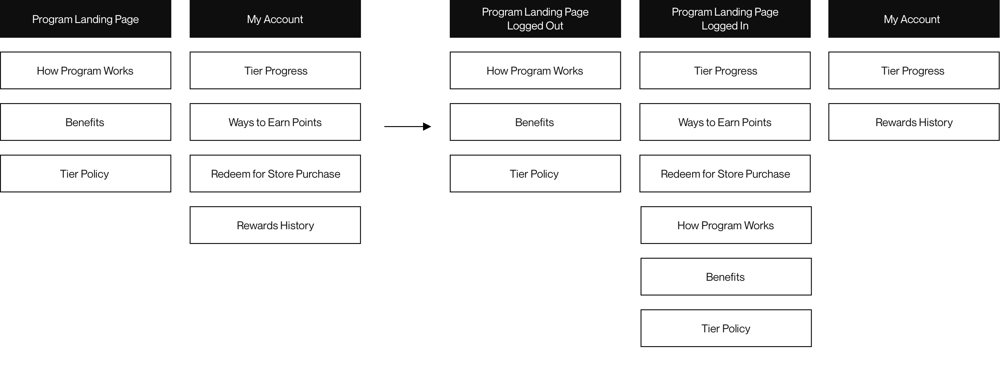
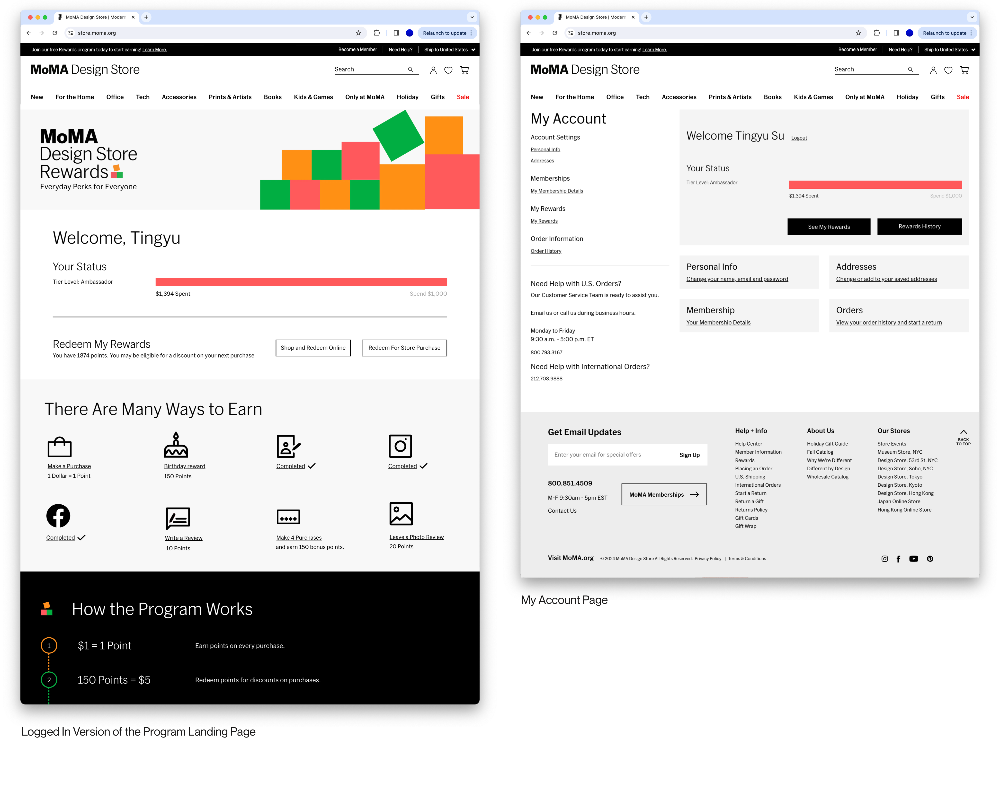
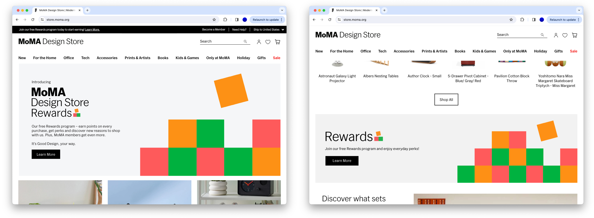
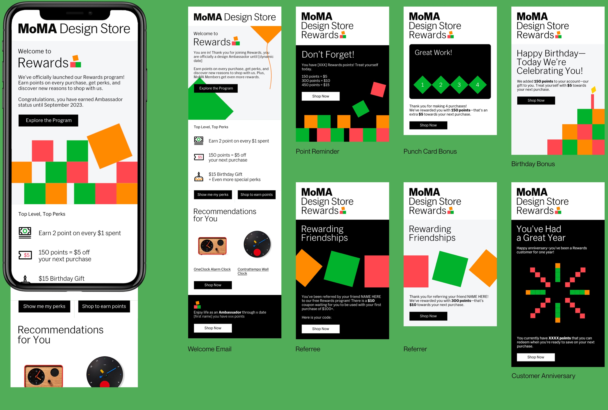

MoMA Design Store Rewards
MoMA Design Store Rewards merges digital and physical shopping with personalized recommendations and community building, enhancing engagement and loyalty while boosting transaction rates for a rewarding customer experience.
Category
Service Design · UIUX
Service Design · UIUX
Timeline
06.2022-02.2023
06.2022-02.2023
Role
Digital Design Manager
Digital Design Manager

Problems
In 2021 and 2022, MoMA Design Store's customer return to purchase rate consistently stayed below the industry average of 16.5%. Also, there's a notable gap between the online and physical shopping experiences, which currently function as separate entities. Bridging this gap is essential for a unified and improved customer journey.
Challenge
The main challenge encountered in this project was the constrained timeline and limited resources. With the holiday season fast approaching, our team has a narrow window of just six months for ideation, research, design, iteration, build and test out the program, on top of our regular daily tasks.
· Research ·
Current Customer Experience
The MoMA Design Store, an extension of the esteemed Museum of Modern Art, exemplifies a perfect blend of art and commerce in the retail landscape. It offers an exceptional online shopping platform, where art enthusiasts and shoppers can explore and purchase a curated selection of design objects and art-inspired items from anywhere in the world. Complementing its digital presence, the MoMA Design Store also boasts physical retail locations in key international cities outside of New York City, such as Hong Kong, Japan, and Germany, broadening its global footprint and bringing its unique aesthetic to a worldwide audience.

Seasonal pop-up stores add an element of surprise and exclusivity, popping up in various locations to offer limited-time shopping experiences that keep customers engaged and excited. In addition to these shopping avenues, the MoMA Design Store enhances its connection with art lovers through museum memberships, offering exclusive benefits and fostering a deeper relationship with the MoMA community. Seasonal sales events further entice customers, providing opportunities to acquire unique design pieces at attractive prices.

Potential Opportunity?
The team recognized the importance of strengthening its bond with customers and enhancing its brand presence in the market. To achieve this, we wanted to explore innovative strategies that would allow us to connect more intimately with our customer base. The focus was on understanding the customers' needs and preferences, providing them with a more personalized and engaging shopping experience. This final approach aimed to cultivate a deeper sense of community among its customers, encouraging their continued patronage and support. With a keen eye on long-term customer relationships, we were poised to take a significant step that would not only enrich the customer experience but also reinforce the brand's position in the competitive retail landscape.
· Our Approach ·
Our Solution
After the research, the team believes establishing our loyalty program as a strategic move will help to deepen customer engagement and foster long-term relationships. This program is envisioned as a tool for rewarding repeat purchases and a means to create a community of art and design enthusiasts who feel a personal connection to the MoMA brand. Also, having our own loyalty program besides the MoMA museum membership helps incentivize customers to return.
Many retailers leverage loyalty programs to boost customer retention and sales by offering rewards and personalized experiences. These programs provide valuable insights through data collection on consumer habits, aiding in tailored marketing efforts and product improvement. Additionally, they foster a sense of community and brand loyalty, encouraging increased spending and positive word-of-mouth while presenting opportunities for customer feedback, cross-selling, and upselling.
To advance this project within our organization, we established two primary objectives.
Objective #1: Customer Return to Purchase Rate
We aim for our enrolled customers to actively engage with our comprehensive range of services and consistently reap the rewards with each purchase, thereby contributing to a high customer return rate.
We aim for our enrolled customers to actively engage with our comprehensive range of services and consistently reap the rewards with each purchase, thereby contributing to a high customer return rate.
Objective #2: Customer Entry Rate
We want to introduce our program to a wide range of customers, sparking their interest and encouraging them to join. We aim to present this as an exclusive and enticing opportunity, and unique and rewarding experience.
We want to introduce our program to a wide range of customers, sparking their interest and encouraging them to join. We aim to present this as an exclusive and enticing opportunity, and unique and rewarding experience.
Touchpoints
Here we present a comprehensive map of every interaction point our customers may experience with our service, encompassing both digital and physical realms. Within these varied touchpoints, we plan to integrate distinct content tailored to achieve specific objectives.
The touchpoints highlighted in green are strategically designed to include segments that actively promote our loyalty program, aiming to entice customers to join. Meanwhile, the areas marked in orange are focused on content that motivates customers to make purchases, effectively utilizing the benefits offered by the loyalty program.
The touchpoints highlighted in green are strategically designed to include segments that actively promote our loyalty program, aiming to entice customers to join. Meanwhile, the areas marked in orange are focused on content that motivates customers to make purchases, effectively utilizing the benefits offered by the loyalty program.

Please scroll to Design Process section to see how we design the core functions of the project and How to Promote the Program section to view how we promote the program.
· Design Process ·
Program Landing Page
A landing page is essential when launching a new program. It should clearly present key information, including how the program operates, its benefits, and a Q&A section. I delved into various approaches to effectively introduce and highlight the program to potential participants.

Working closely with marketing experts and our copywriter, we selected the second wireframe option from the left to proceed with. Our goal was to ensure that the content was both clear and engaging.

My Account vs. A New Page
Originally, my plan was to create an informational page where customers could learn about the program, and to use the existing My Account page to display details like their tier level, redeemable credit, ways to earn more points, FAQs, and so on. Since the My Account page was a pre-existing, generic page, this approach wouldn't have required customers to navigate any new steps or pages.
However, I encountered a setback when the development team informed me that this plan was not feasible due to technical constraints. This prompted me to go back to the drawing board and reconsider the information architecture altogether.

However, I encountered a setback when the development team informed me that this plan was not feasible due to technical constraints. This prompted me to go back to the drawing board and reconsider the information architecture altogether.
Faced with the technical constraint, I re-evaluated the structure and developed a new approach: creating a logged-in version of the program's landing page. On this page, users can both learn about the program and track their personal progress. This solution requires only minimal updates to the existing My Account page, making it a feasible and efficient alternative.

How to Combine the In-store and Online Experience?
In contrast to online shopping, where points can be seamlessly redeemed during the checkout process, in-store customers are required to present a redemption code at the point of sale. Ideally, I envisioned one landing page for each store's signage, introducing the loyalty program while incorporating specific content about each individual store. (MoMA Design Store operates three physical stores in New York City, each offering a slightly distinct product selection and hosting unique store events.)
However, due to our constrained timeline and resource limitations, we must combine the in-store experience with the online experience, striking a balance between the two.
However, due to our constrained timeline and resource limitations, we must combine the in-store experience with the online experience, striking a balance between the two.
Now, customers are required to actively click the 'Redeem for Store Purchase' button and choose the amount they wish to redeem. Upon selection, the system generates and sends them an email containing a unique code, which they can then present at the store's register for redemption.
· For Customer Entry Rate ·
Homepage Banners
We dynamically feature the program on the evergreen global nav skinny banner, homepage hero, and a banner at the bottom of the homepage (after we switch the homepage hero to another theme). New and returning customers see different copy versions that are more relevant to them.

Category Landing Page
We also want to surface the program on webpages with a different hierarchy—for example, the product grid and detail pages.
Email Marketing
Promotional emails, from program announcement to welcome email, from point reminder notification to birthday bonus, are designed and implemented, to create a sound cross-platform user experience.

Social Media Content
Social media plays a crucial role in our strategy. For the launch phase, we aim to create content that includes detailed information about how the program functions. Additionally, we've crafted evergreen content, designed to remain relevant and engaging over time, which will be prominently featured at the top of our post grid. I designed all social media content and collaborated with the Assitant Director of Branding and External Events.
· Visual Design ·
Brand Identity
One more thing to add – I also co-led the brand identity. The creative team started with two visual directions. One direction highlights MoMA Design Store’s core mission: “to bring good design into people’s lives by putting it into their homes and hands.” The other concept conveys the idea of a loyalty program visually. After two rounds of review with the marketing team, the second option was chosen to revise and refine.